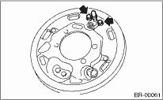

CAUTION:
Do not let brake fluid come into contact with the painted surface of the vehicle body. Completely wash away with water immediately and wipe off if it was accidental.
1. Set the vehicle on a lift.
2. Loosen the wheel nuts.
3. Lift up the vehicle, then remove the rear wheels.
4. Release the parking brake.
5. Remove the brake drum from brake assembly. 
6. Remove the brake shoe.
7. Disconnect the brake hose.
8. Remove the hub.
9. Disconnect the ABS wheel speed sensor from back plate.
10. Remove the rear drum brake assembly.

11. Remove the bolts holding the wheel cylinder assembly on back plate, and remove the assembly.
